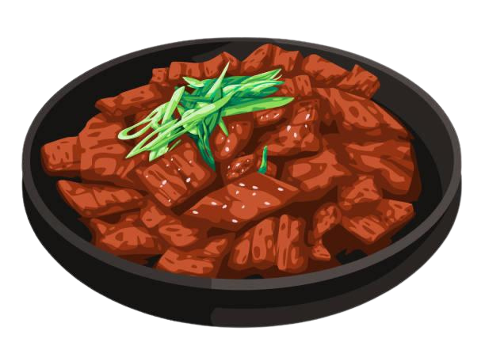

Bulgogi Recipe
Marinated beef grilled to perfection.
Ingredients
For the Marinade:
- 1 lb (450g) beef sirloin or ribeye, thinly sliced (against the grain)
- 3 tablespoons soy sauce
- 2 tablespoons brown sugar (or honey)
- 1 tablespoon sesame oil
- 1 tablespoon rice vinegar
- 3 cloves garlic, minced
- 1-inch piece ginger, minced or grated
- 1 tablespoon gochujang (Korean red chili paste) (optional for spice)
- 1 tablespoon gochugaru (Korean red pepper flakes) (optional for heat)
- 1/2 medium onion, finely grated
- 2 tablespoons grated pear (or apple, to tenderize the meat)
- 1 tablespoon sesame seeds
- 2 green onions, chopped (for garnish)
- 1/2 teaspoon black pepper
For Cooking:
- 1 tablespoon vegetable oil (for cooking)
- Lettuce leaves (for wrapping, optional)
- Steamed rice (for serving)
Preparation Time
- Prep time: 15 minutes (plus 30 minutes to marinate)
- Cook time: 10 minutes
- Total time: ~55 minutes
Instructions
- Prepare the Marinade:
- In a bowl, combine the soy sauce, brown sugar, sesame oil, rice vinegar, garlic, ginger, gochujang, gochugaru, grated onion, and grated pear. Stir until the sugar is dissolved and the mixture is well combined.
- Add the black pepper and sesame seeds, and mix again.
- Marinate the Beef:
- Place the thinly sliced beef into a shallow dish or ziplock bag. Pour the marinade over the beef, ensuring it’s well-coated.
- Cover and refrigerate for at least 30 minutes (or up to 2 hours) to allow the flavors to meld.
- Cook the Bulgogi:
- Heat 1 tablespoon of vegetable oil in a large pan or skillet over medium-high heat.
- Add the marinated beef in a single layer (do not overcrowd the pan) and cook for 3-5 minutes, stirring occasionally, until the beef is browned and cooked through. If cooking in batches, remove the beef from the pan and set it aside while cooking the next batch.
- Serve:
- Once the beef is cooked, transfer it to a plate and garnish with chopped green onions and a sprinkle of sesame seeds.
- Serve with steamed rice and lettuce leaves (optional for wrapping the beef).
Bulgogi is a flavorful, sweet and savory Korean BBQ dish that's perfect for grilling or stir-frying. It’s traditionally served with rice and can be enjoyed in lettuce wraps for an extra layer of freshness. The marinated beef is tender, juicy, and aromatic—perfect for a quick and satisfying meal!